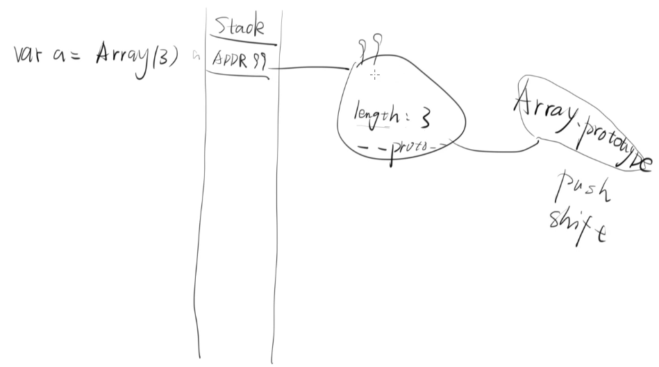
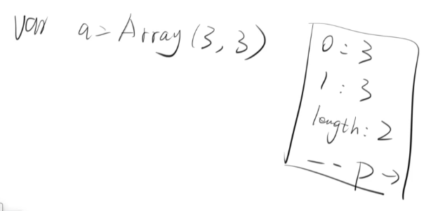
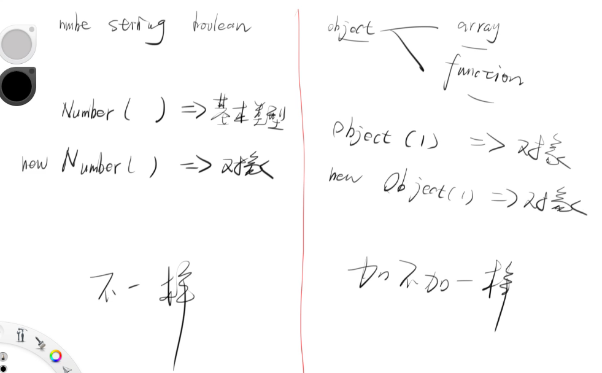
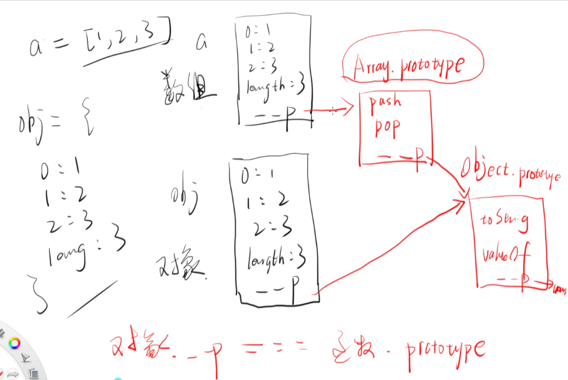

window.Array 和 window.Function
5 个 falsy 值: 0 NaN ‘’ undefined null
7 种数据结构: number string boolean null undefined symbol object(object 中函数和数组都是对象)
Array
js 中的 Array 对象是用于构造数组的全局对象，数组是类似于列表的高阶对象
当写 var a = Array(3) 时
这个是执行 var a = Array(3) 后的内存图
var a = Array(3, 3)
这个时候就变成这样
加不加 new 对 Array 都一样

Function
Function 构造函数创建一个新的 Function 对象，在 js 中，每个函数实际上都是一个 Function 对象var f = function(a, b) {
return a+b
}
// 等价于如下
var f = new Function('a', 'b', 'return a+b')
这里需要注意的是 function 是 js 的关键字，它可以用来声明一个函数，而 Function 则是 window 的一个对象
具名函数(有具体函数名称的函数)function f(){
return undefined
}
匿名函数(没有名称的函数)var f
f = function(){
}
什么是数组 & a.forEach
见下图

从上图中可以看到，本质上数组还是多了一个 Array.prototype 来指向最后的 Object.prototype,这个跟 obj 对象而言还是不一样的
有两种遍历方式var obj = {
0:1, 1:2, 2:3, 3:4, length: 4;
}
for (let i=0; i < obj.length; i++) {
console.log(obj[i]);
} // 1 2 3 4
for (let i in obj) {
console.log(obj[i]);
} // 1 2 3 4(4会被打印两次，因为它只会遍历 obj 的 hash)
伪数组
原型链中没有 Array.prototype 的叫伪数组(没有 push 和 pop 方法)
API
a = ['a', 'b', 'c', 'd'] |
函数里面接受参数function f(x, y) {
return x+y
}
函数里面接受一个函数function f2(fn) {
console.log('我接收到了一个函数');
return undefined
}
f2 (function(){})
function x(y) {
if (typeof y !== 'function') {
console.log('滚');
return false;
} else {
console.log('我接收到了一个函数');
return true;
}
}
x(1) // 滚
x(function(){}) // 我接收到了一个函数
函数里面接受一个函数并执行function x(y) {
if (typeof y !== 'function') {
console.log('滚');
return false;
} else {
console.log('我接收到了一个函数');
y()
console.log('并且我执行了这个函数')
return true;
}
}
x(function(){ console.log(2)})
// 我接收到了一个函数
// 2
// 并且我执行了这个函数
函数里面接受一个函数并执行同时传参给另一个函数function x(y) {
if (typeof y !== 'function') {
console.log('滚');
return false;
} else {
console.log('我接收到了一个函数');
y(666)
console.log('并且我执行了这个函数')
return true;
}
}
x(function(xxx) {
console.log(xxx);
})
// 我接收到了一个函数
// 666
// 并且我执行了这个函数
所以 a.forEach 的流程就是// array 是一个数组，而 f 是一个函数
function forEach(array, f) {
for (let i = 0; i < array.length; i++) {
// 执行这个函数
f(array[i], i)
}
}
forEach(['a', 'b', 'c'], function(value, key){
// 这个函数中就打印这句话
// 第一个参数一定是 value. 第二个参数一定是 key
console.log(value, key);
})
有一点需要注意的是，for 循环可以 break 和 continue；Array.prototype.forEach 不支持 break 和 continue
forEach 和 sort 的原理
forEach
a.forEach(function(){}) 之所以这里不传 a 的参数，是因为这里已经执行到了 a.forEach.call(a, function(){})var obj = {0: 'a', 1: 'b', length:2};
// 这里调用到了 this
obj.forEach = function(x) {
for (let i = 0; i < this.length; i++) {
x(this[i], i);
}
};
obj.forEach(function(value, key){
console.log(value, key);
});
在传三个参数时,比如如下a = ['fff', 'jjj', 'kkk'];
a.forEach(function(b, c, d) {
console.log(b, c, d);
})
// 结果是
fff 0
Array(3) [ "fff", "jjj", "kkk" ]
jjj 1
Array(3) [ "fff", "jjj", "kkk" ]
kkk 2
Array(3) [ "fff", "jjj", "kkk" ]
sort
sort 就是排序 apia = [5, 6, 3, 4, 1, 2]
a.sort() // 1, 2, 3, 4, 5, 6
a.sort(function(x, y) {return x-y}); // 1, 2, 3, 4, 5, 6
a.sort(function(x, y) {return y-x}); // 6, 5, 4, 3, 2, 1
a = ['a', 'b', 'c']
hash = {
'a' : 2,
'b' : 1,
'c' : 3
}
a.sort(function(x, y) {return hash[x] - hash[y]})
join
在字符串中加入一段字符串a = [1, 2, 3]
a.join('hello') // '1hello2hello3'
a.join(',') // '1, 2, 3'
a + '' // '1, 2, 3' 这个只是巧合
concat
用来连接字符串var a = [1, 2, 3]
var b = [4, 5, 6]
var c = a.concat(b) // [1, 2, 3, 4, 5, 6]
var b = a.concat([]) // b => [1, 2, 3] 一般用来复制这个数组
map
map 就是把函数返回的值组成一个新数组，并返回var a = [1, 2, 3]
// 与 forEach 差不多，只不过有个返回值
// a.forEach(function(){}) // undefined
a.map(function(value, key) {
return value * 2;
}) // [2, 4, 6]
// 上面的等价于箭头函数表示
a.map(value => value * 2) // [2, 4, 6]
fiter
a = [1, 2, 3, 4, 5, 6, 7, 8, 9] |
reduce
遍历这个数组，每一次取一个结果，然后把这个结果放在下一项的身上var a = [1, 2, 3]
a.reduce(function(sum, n){
return sum + n
}, 0) // 最后一个参数表示初始值
// 箭头函数表示
a.reduce((sum, n) => sum + n, 0)
最后一个例子
map 可以用 reduce 表示a = [1, 2, 3]
a.reduce(function(arr, n) {
arr.push(n * 2)
return arr
}, [])
filter 可以用 reduce 表示a = [1, 2, 3, 4, 5, 6, 7, 8, 9, 10]
a.reduce(function(arr, n){
if (n % 2 === 0) {
arr.push(n)
}
return arr
}, [])
总结
创造数组
- Array()
其他类型转换成数组
增
删
改
- Array.prototype.copyWithin()
- Array.prototype.fill()
- Array.prototype.pop()
- Array.prototype.push()
- Array.prototype.shift()
- Array.prototype.unshift()
- Array.prototype.reverse()
- Array.prototype.sort()
- Array.prototype.splice()
查
- Array.prototype.every()
- Array.prototype.some()
- Array.prototype.filter()
- Array.prototype.find()
- Array.prototype.findIndex()
- Array.prototype.includes()
- Array.prototype.indexOf()
- Array.prototype.lastIndexOf()
- Array.prototype.some()
拷
全能
- Array.prototype.map() 基于给予的数组创造一个新数组
- Array.prototype.reduce() 遍历数组，将两两元素做一些操作
- Array.prototype.reduceRight() 同上，从右到左
- Array.prototype.forEach() 对数组每一个元素做一些操作
- Array.from() 新建数组后，再使用map.